DEMO_febio_0058_face_tube_loading
Below is a demonstration for:
- Building triangulated surface geometry for a face
- Meshing the face using pentahedral elements
- Building model of a tube
- Defining the boundary conditions
- Coding the febio structure
- Running the model
- Importing and visualizing results
Contents
Keywords
- febio_spec version 2.5
- febio, FEBio
- face
- contact, sliding, friction
- pentahedral elements, penta6
- static, solid
- hyperelastic, Ogden
- displacement logfile
clear; close all; clc;
Plot settings
fontSize=10; faceAlpha1=1; faceAlpha2=0.3; markerSize1=15; markerSize2=10; lineWidth=2;
Control parameters
% Path names defaultFolder = fileparts(fileparts(mfilename('fullpath'))); savePath=fullfile(defaultFolder,'data','temp'); % Defining file names febioFebFileNamePart='tempModel'; febioFebFileName=fullfile(savePath,[febioFebFileNamePart,'.feb']); %FEB file name febioLogFileName=fullfile(savePath,[febioFebFileNamePart,'.txt']); %FEBio log file name febioLogFileName_disp=[febioFebFileNamePart,'_disp_out.txt']; %Log file name for exporting displacement febioLogFileName_force=[febioFebFileNamePart,'_force_out.txt']; %Log file name for exporting force febioLogFileName_strainEnergy=[febioFebFileNamePart,'_energy_out.txt']; %Log file name for exporting strain energy density volumeFactor=2; %Volume factor used in tetgen, larger means larger internal elements layerThickness=5; numSplit=1; stripWidth=6; stripRadius=4; pointSpacingMask=stripWidth/2; nRim=ceil(stripRadius/pointSpacingMask)+1; if nRim<6 nRim=6; end discRadius1=30; discRadius2=discRadius1+5; discNodeOffset=15; %Material parameter set c1_1=1e-3; %Shear-modulus-like parameter m1_1=2; %Material parameter setting degree of non-linearity k_1=c1_1*100; %Bulk modulus c1_2=c1_1*10; %Shear-modulus-like parameter m1_2=2; %Material parameter setting degree of non-linearity k_2=c1_2*100; %Bulk modulus % FEA control settings numTimeSteps=10; %Number of time steps desired max_refs=35; %Max reforms max_ups=0; %Set to zero to use full-Newton iterations opt_iter=10; %Optimum number of iterations max_retries=5; %Maximum number of retires dtmin=(1/numTimeSteps)/100; %Minimum time step size dtmax=(1/numTimeSteps); %Maximum time step size symmetric_stiffness=0; min_residual=1e-20; runMode='external'; %Boundary condition parameters initialOffset=0.1; displacementMagnitude_z=-2-initialOffset; %Displacement applied %Contact parameters contactPenalty=0.1; laugon=0; minaug=1; maxaug=10; fric_coeff=0.5; optStructRayTrace.eps = 1e-6; optStructRayTrace.triangle = 'two sided'; optStructRayTrace.ray = 'ray'; optStructRayTrace.border = 'normal'; nz=[0 0 1];
Load face mesh
% [Fs,Vs]=graphicsModels(10); [stlStruct] = import_STL(fullfile(defaultFolder,'data','STL','nefertiti_fine.stl')); Fs=stlStruct.solidFaces{1}; %Faces Vs=stlStruct.solidVertices{1}; %Vertices [Fs,Vs]=mergeVertices(Fs,Vs); % Merging nodes pointSpacing=mean(patchEdgeLengths(Fs,Vs)); cFigure; hold on; gpatch(Fs,Vs,'gw','k'); % gpatch(Eb,Vs,'bw','b',1,2); % plotV(Vs(logicForce,:),'r.','MarkerSize',25); axisGeom; camlight headlight; drawnow;

Vs2=Vs; Eb=patchBoundary(Fs,Vs); cParSmooth.n=15; cParSmooth.Method='LAP'; cParSmooth.RigidConstraints=unique(Eb(:)); Vs2=patchSmooth(Fs,Vs2,[],cParSmooth); [~,~,N]=patchNormal(Fs,Vs2); Vs2=Vs2-N*layerThickness; cParSmooth.n=5; cParSmooth.Method='HC'; Vs2=patchSmooth(Fs,Vs2,[],cParSmooth); V=[Vs;Vs2]; E_face=[Fs+size(Vs,1) Fs]; [E_face,V]=subPenta(E_face,V,numSplit,3); [F]=element2patch(E_face,V,'penta6'); Fp_tri=F{1}; Fp2=Fp_tri(1:size(Fs,1),:); Fp1=Fp_tri(end-size(Fs,1)+1:end,:);
cFigure; gpatch(Fs,Vs,'bw','none',1); gpatch(F,V,'w','k',0.5); axisGeom; camlight headlight; drawnow;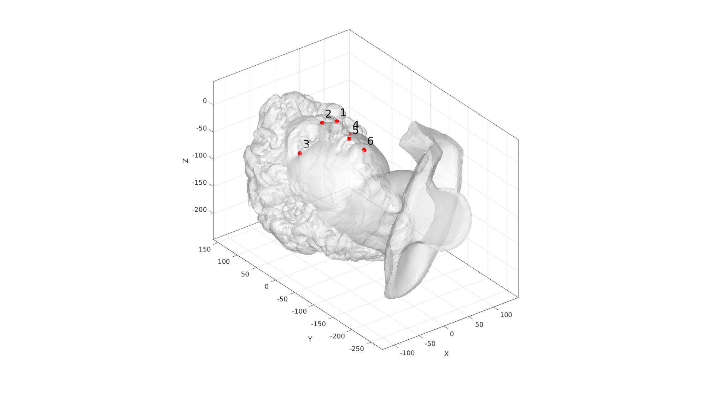
[~,ind1_nose]=max(V(:,3)); indNoseTip=ind1_nose; V1=V(indNoseTip,:); V2=V1; V2(:,2)=V2(:,2)+45; V3=V1; V3(:,2)=min(V(:,2)); V4=V1; V4(:,1)=min(V(:,1))+4; V5=V1; V5(:,1)=max(V(:,1)-4); V_markers=[V1;V2;V3;V4;V5]; V_markers(:,3)=max(V(:,3)); V_rim=[(0.5*V1+0.5*V2);... (0.2*V1+0.8*V4);... (0.3*V1+0.7*V4)+[0 -35 0];... (0.2*V1+0.8*V3)+[-25 0 0];... (0.1*V1+0.9*V3);... ]; Vcc=flipud(V_rim(2:end-1,:)); Vcc(:,1)=-Vcc(:,1); V_rim=[V_rim;Vcc]; Vcs=evenlySampleCurve(V_rim,1000,'pchip',1); np=ceil(max(pathLength(Vcs))/pointSpacingMask); Vcs=evenlySampleCurve(V_rim,np,'pchip',1); t=linspace(0.5*pi,2.5*pi,np+1)'; t=t(1:end-1); Vcd1=discRadius1*[cos(t) sin(t)]; Vcd1(:,2)=Vcd1(:,2)+(0.5*V1(:,2)+0.5*V3(:,2)); Vcd1(:,3)=max(V(:,3))+discNodeOffset; Vcd2=discRadius2*[cos(t) sin(t)]; Vcd2(:,2)=Vcd2(:,2)+(0.5*V1(:,2)+0.5*V3(:,2)); Vcd2(:,3)=max(V(:,3))+discNodeOffset;
cFigure; hold on; gpatch(Fp1,V,'w','none',1); plotV(V_markers,'r.','MarkerSize',50); text(V_markers(:,1)+4,V_markers(:,2),V_markers(:,3),{'1','2','3','4','5'},'FontSize',25); plotV(V_rim,'k.','MarkerSize',35,'LineWidth',3); plotV(Vcs,'k-','LineWidth',2); % plotV(Vcd1,'b-','LineWidth',2); axisGeom; camlight headlight; view(2); drawnow;

m=mean(Vcs,1); r=mean(sqrt(sum((Vcs-m(ones(np,1),:)).^2,2))); f=(r+stripWidth/2)/r; Vcs1=(Vcs-m(ones(np,1),:)).*f+m(ones(np,1),:); f=(r-stripWidth/2)/r; Vcs2=(Vcs-m(ones(np,1),:)).*f+m(ones(np,1),:); % Ecs=[(1:size(Vcs,1))' [2:size(Vcs,1) 1]']; % ne=vecnormalize(edgeVec(Ecs,Vcs)); % ne2=cross(ne,nz(ones(size(ne,1),1),:)); % % Vcs1=Vcs+ne2*stripWidth/2; % Vcs2=Vcs-ne2*stripWidth/2; [Fm,Vm]=regionTriMesh2D({Vcs1(:,[1 2]),Vcs2(:,[1 2])},pointSpacingMask,0,0); Vm(:,3)=max(V(:,3)); N=patchNormal(Fm,Vm); n=mean(N,1); if dot(n,nz)>0 Fm=fliplr(Fm); end
cFigure; hold on; gpatch(Fp1,V,'w','none',1); gpatch(Fm,Vm,'gw','g',1,2); plotV(V_markers,'r.','MarkerSize',50); text(V_markers(:,1)+4,V_markers(:,2),V_markers(:,3),{'1','2','3','4','5'},'FontSize',25); plotV(V_rim,'k.','MarkerSize',35,'LineWidth',3); % plotV(Vcs,'k-','LineWidth',2); plotV(Vcs1,'g-','LineWidth',2); plotV(Vcs2,'g-','LineWidth',2); % quiverVec(Vcs,ne2,stripWidth/2,'g'); % quiverVec(Vcs,-ne2,stripWidth/2,'g'); axisGeom; camlight headlight; view(2); drawnow;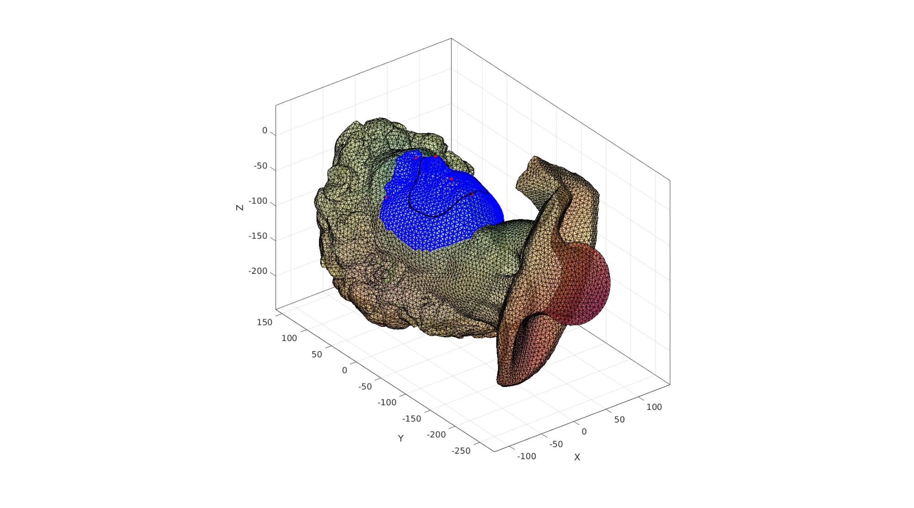
[~,~,Nm]=patchNormal(Fm,Vm); [Vm2]=traceToSurf(Vm,Nm,Fp1,V,optStructRayTrace);
cFigure; hold on; gpatch(Fp1,V,'w','none',0.9); gpatch(Fm,Vm,'gw','g',0,1); gpatch(Fm,Vm2,'none','k',0,2); axisGeom; camlight headlight; view(2); drawnow;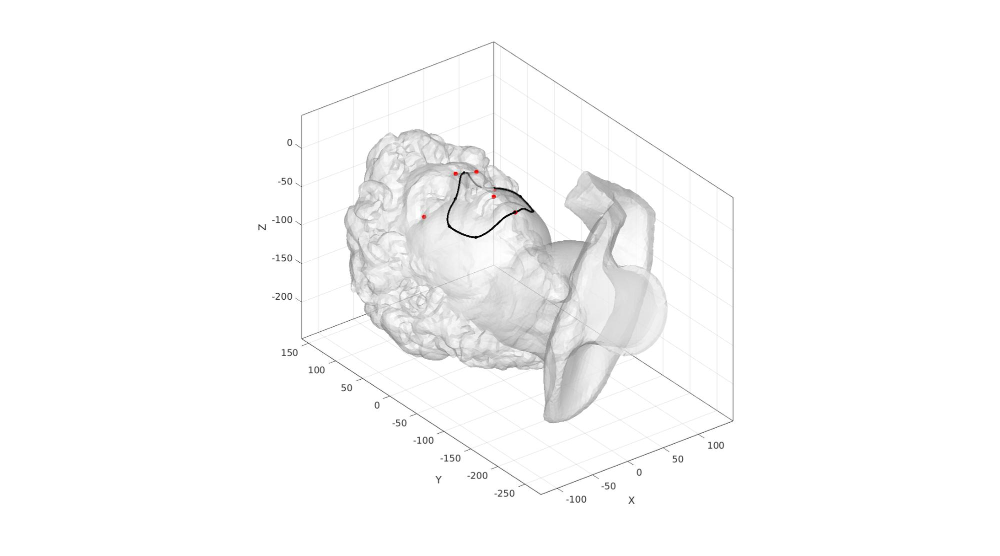
[~,~,Nm2]=patchNormal(Fm,Vm2); Em2=patchBoundary(Fm,Vm2); groupOpt.outputType='label'; G=tesgroup(Em2,groupOpt); [Fr1,Vr1]=roundMesh(Em2(G==1,:),Vm2,Nm2,nRim,stripRadius); [Fr2,Vr2]=roundMesh(Em2(G==2,:),Vm2,Nm2,nRim,stripRadius); indEnd=size(Vr1)-np+1:1:size(Vr1); [Fr1,Vr1]=quad2tri(Fr1,Vr1,'a'); [Fr2,Vr2]=quad2tri(Fr2,Vr2,'a'); pointSpacing=0.5; %Desired point spacing resampleCurveOpt=1; interpMethod='linear'; %or 'natural' [Ft,Vt]=regionTriMesh3D({Vr1(indEnd,:),Vr2(indEnd,:)},pointSpacingMask,0,'linear');
cFigure; hold on; gpatch(Fp1,V,'w','none',0.5); gpatch(Fm,Vm2,'gw','none',1,2); gpatch(Fr1,Vr1,'gw','none',1,2); gpatch(Fr2,Vr2,'gw','none',1,2); axisGeom; camlight headlight; view(2); drawnow;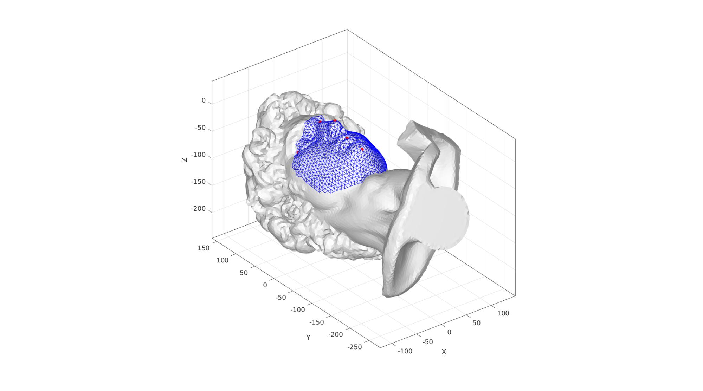
cFigure; hold on; gpatch(Fp1,V,'w','none',0.9); gpatch(Fm,Vm2,'none','k',0,2); gpatch(Ft,Vt,'gw','g',1,1); gpatch(Fr1,Vr1,'rw','r',1,2); gpatch(Fr2,Vr2,'bw','b',1,2); plotV(Vr1(indEnd,:),'y-','LineWidth',3); plotV(Vr2(indEnd,:),'y-','LineWidth',3); axisGeom; camlight headlight; view(2); drawnow;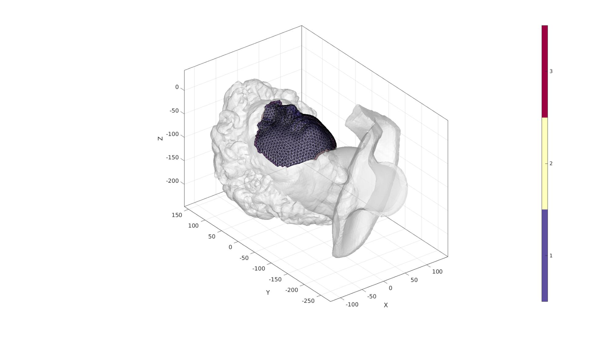
cPar.closeLoopOpt=1; cPar.patchType='quad'; V_loft1=Vr2(indEnd,:); V_loft2=Vcd1; V_loft3=Vr1(indEnd,:); V_loft4=Vcd2; [~,indMax]=max(V_loft1(:,2)); if indMax>1 V_loft1=V_loft1([indMax:size(V_loft1,1) 1:indMax-1],:); end [~,indMax]=max(V_loft1(:,1)); if indMax<np/2 V_loft1=flipud(V_loft1); end [~,indMax]=max(V_loft3(:,2)); if indMax>1 V_loft3=V_loft3([indMax:size(V_loft3,1) 1:indMax-1],:); end [~,indMax]=max(V_loft3(:,1)); if indMax<np/2 V_loft3=flipud(V_loft3); end [Fd1,Vd1]=polyLoftLinear(V_loft1,V_loft2,cPar); [Fd1,Vd1]=quad2tri(Fd1,Vd1,'a'); [Fd2,Vd2]=polyLoftLinear(V_loft3,V_loft4,cPar); [Fd2,Vd2]=quad2tri(Fd2,Vd2,'a'); clear cparSmooth; cparSmooth.Method='HC'; cparSmooth.n=5; Eb1=patchBoundary(Fd1,Vd1); cparSmooth.RigidConstraints=Eb1; Vd1=patchSmooth(Fd1,Vd1,[],cparSmooth); Eb2=patchBoundary(Fd2,Vd2); cparSmooth.RigidConstraints=Eb2; Vd2=patchSmooth(Fd2,Vd2,[],cparSmooth); [Fdt,Vdt]=regionTriMesh2D({Vcd2(:,[1 2]),Vcd1(:,[1 2])},pointSpacingMask,0,0); Vdt(:,3)=max(V(:,3))+discNodeOffset; N=patchNormal(Fdt,Vdt); n=mean(N,1); if dot(n,nz)>0 Fdt=fliplr(Fdt); end [Fc,Vc]=regionTriMesh2D({Vcd1(:,[1 2])},pointSpacingMask,0,0); Vc(:,3)=max(V(:,3))+discNodeOffset; cFigure; hold on; gpatch(Fp1,V,'w','none',0.9); gpatch(Fd1,Vd1,'bw','b',1); gpatch(Fdt,Vdt,'rw','r',1); gpatch(Fd2,Vd2,'gw','g',1); plotV(Vr1(indEnd,:),'r-','LineWidth',3); plotV(Vr2(indEnd,:),'g-','LineWidth',3); plotV(Vcd1,'b-','LineWidth',3); axisGeom; camlight headlight; view(2); drawnow;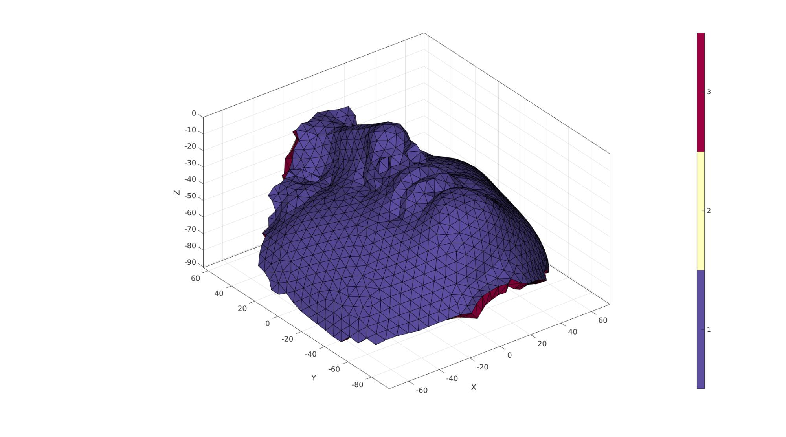
[F_rim,V_rim,C_rim]=joinElementSets({Fm,Fr1,Fr2,Ft},{Vm2,Vr1,Vr2,Vt});
[F_rim,V_rim]=mergeVertices(F_rim,V_rim);
[F_mask,V_mask,C_mask]=joinElementSets({Fd1,Fd2,Fdt,Fc},{Vd1,Vd2,Vdt,Vc});
[F_mask,V_mask]=mergeVertices(F_mask,V_mask);
cFigure; hold on; gpatch(Fp1,V,'w','none',1); gpatch(F_mask,V_mask,'bw','none',0.8); gpatch(F_rim,V_rim,'gw','none',1); axisGeom; camlight headlight; view(2); drawnow;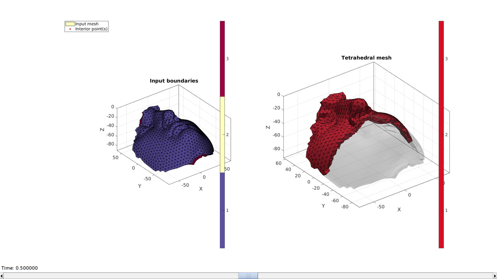
cFigure; hold on; % gpatch(Fp1,V,'w','none',1); gpatch(F_mask,V_mask,'bw','none',1); gpatch(F_rim,V_rim,'gw','none',1); axisGeom; camlight headlight; view(2); drawnow;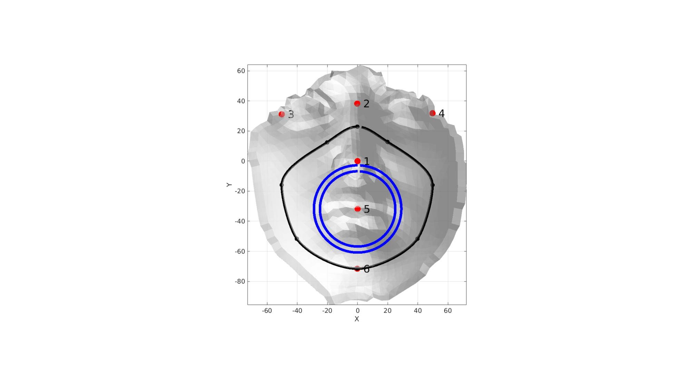
cFigure; hold on; gpatch(Fp1,V,'w','none',0.9); gpatch(F_rim,V_rim,C_rim,'k',1); patchNormPlot(F_rim,V_rim); axisGeom; camlight headlight; view(2); colormap gjet; icolorbar; drawnow;

[V_regions]=getInnerPoint(F_rim,V_rim); % Define region points [regionA]=tetVolMeanEst(F_rim,V_rim); %Volume for regular tets inputStruct.stringOpt='-pq1.2AaY'; inputStruct.Faces=F_rim; inputStruct.Nodes=V_rim; inputStruct.holePoints=[]; inputStruct.faceBoundaryMarker=C_rim; %Face boundary markers inputStruct.regionPoints=V_regions; %region points inputStruct.regionA=regionA*volumeFactor; % Mesh model using tetrahedral elements using tetGen [meshOutput]=runTetGen(inputStruct); %Run tetGen
%%%%%%%%%%%%%%%%%%%%%%%%%%%%%%%%%%%%%%%%%%%%% --- TETGEN Tetrahedral meshing --- 02-Jul-2020 21:04:21 %%%%%%%%%%%%%%%%%%%%%%%%%%%%%%%%%%%%%%%%%%%%% --- Writing SMESH file --- 02-Jul-2020 21:04:21 ----> Adding node field ----> Adding facet field ----> Adding holes specification ----> Adding region specification --- Done --- 02-Jul-2020 21:04:21 --- Running TetGen to mesh input boundary--- 02-Jul-2020 21:04:21 Opening /mnt/data/MATLAB/GIBBON/data/temp/temp.smesh. Delaunizing vertices... Delaunay seconds: 0.018535 Creating surface mesh ... Surface mesh seconds: 0.00352 Recovering boundaries... Boundary recovery seconds: 0.004724 Removing exterior tetrahedra ... Spreading region attributes. Exterior tets removal seconds: 0.002664 Recovering Delaunayness... Delaunay recovery seconds: 0.002536 Refining mesh... Refinement seconds: 0.033414 Optimizing mesh... Optimization seconds: 0.001728 Writing /mnt/data/MATLAB/GIBBON/data/temp/temp.1.node. Writing /mnt/data/MATLAB/GIBBON/data/temp/temp.1.ele. Writing /mnt/data/MATLAB/GIBBON/data/temp/temp.1.face. Writing /mnt/data/MATLAB/GIBBON/data/temp/temp.1.edge. Output seconds: 0.028718 Total running seconds: 0.096012 Statistics: Input points: 1964 Input facets: 3928 Input segments: 5892 Input holes: 0 Input regions: 1 Mesh points: 2224 Mesh tetrahedra: 7355 Mesh faces: 16674 Mesh faces on exterior boundary: 3928 Mesh faces on input facets: 3928 Mesh edges on input segments: 5892 Steiner points inside domain: 260 --- Done --- 02-Jul-2020 21:04:21 %%%%%%%%%%%%%%%%%%%%%%%%%%%%%%%%%%%%%%%%%%%%% --- Importing TetGen files --- 02-Jul-2020 21:04:21 --- Done --- 02-Jul-2020 21:04:21
Access model element and patch data
Fb_rim=meshOutput.facesBoundary;
Cb_rim=meshOutput.boundaryMarker;
V_rim=meshOutput.nodes;
E_rim=meshOutput.elements;
% Visualizing mesh using |meshView|, see also |anim8|
meshView(meshOutput);
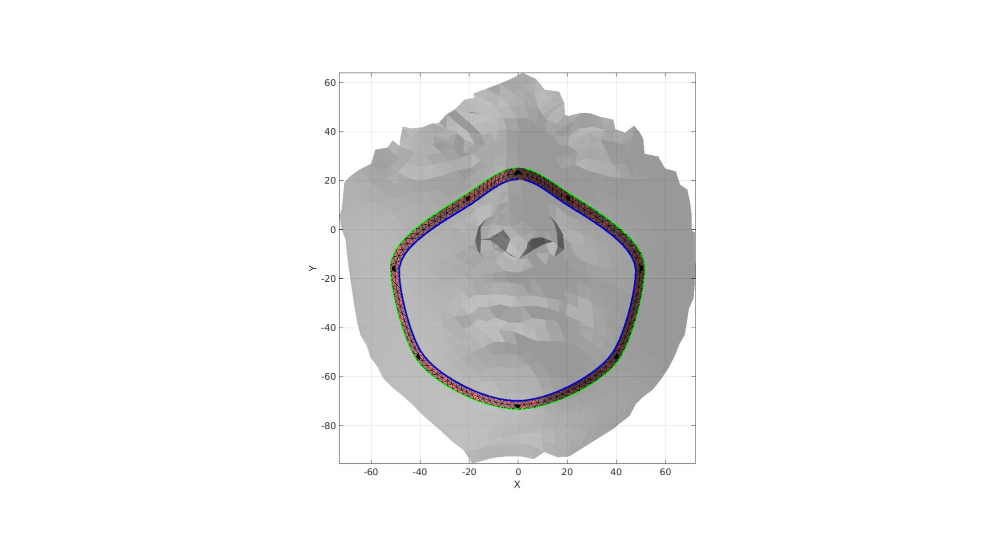 Join node sets
V_rim(:,3)=V_rim(:,3)+initialOffset; Fb_rim=Fb_rim+size(V,1); E_rim=E_rim+size(V,1); V=[V;V_rim];
cFigure; gpatch(F,V,'w','k',1); gpatch(Fb_rim,V,Cb_rim,'k',1); axisGeom; colormap gjet; icolorbar; camlight headlight; drawnow;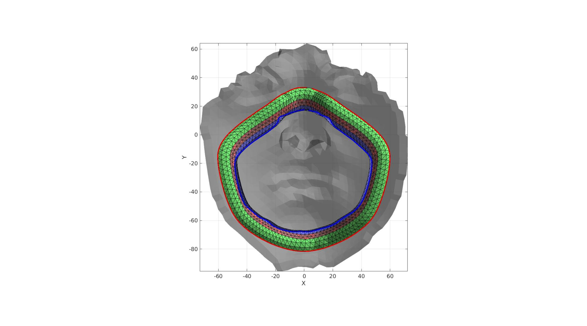
Define contact surfaces
% The rigid master surface of the sphere F_contact_master=fliplr(Fb_rim(Cb_rim~=4,:)); % The deformable slave surface of the slab Vc_Fp2=patchCentre(Fp1,V); D=minDist(Vc_Fp2,V_rim); logicSlave=D<=(10*pointSpacing); logicSlave=triSurfLogicSharpFix(Fp1,logicSlave,3); F_contact_slave=Fp1(logicSlave,:);
Visualize contact surfaces
cFigure; hold on; title('Contact sets and normal directions','FontSize',fontSize); gpatch(F,V,'kw','none',faceAlpha2); hl(1)=gpatch(F_contact_master,V,'gw','k',1); patchNormPlot(F_contact_master,V); hl(2)=gpatch(F_contact_slave,V,'rw','k',1); patchNormPlot(F_contact_slave,V); legend(hl,{'Master','Slave'}); axisGeom(gca,fontSize); camlight headlight; drawnow;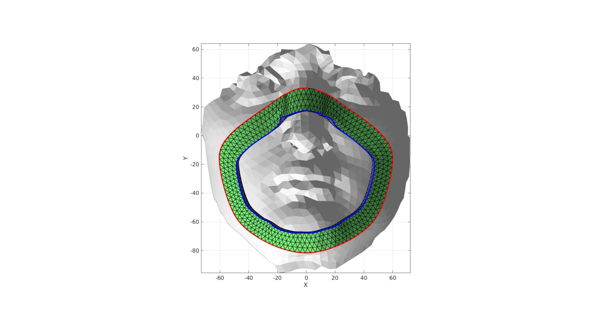
Define boundary conditions
%Supported nodes bcSupportList=unique(Fp2); %Prescribed displacement nodes bcPrescribeList=unique(Fb_rim(Cb_rim==4,:));
Visualize BC's
hf=cFigure; hold on; title('Boundary conditions model','FontSize',fontSize); gpatch(F,V,'kw','none',faceAlpha2); gpatch(Fb_rim,V,'kw','none',faceAlpha2); hl2(1)=plotV(V(bcPrescribeList,:),'r.','MarkerSize',markerSize2); hl2(2)=plotV(V(bcSupportList,:),'k.','MarkerSize',markerSize2); legend(hl2,{'BC prescribe','BC support'}); axisGeom(gca,fontSize); camlight headlight; drawnow;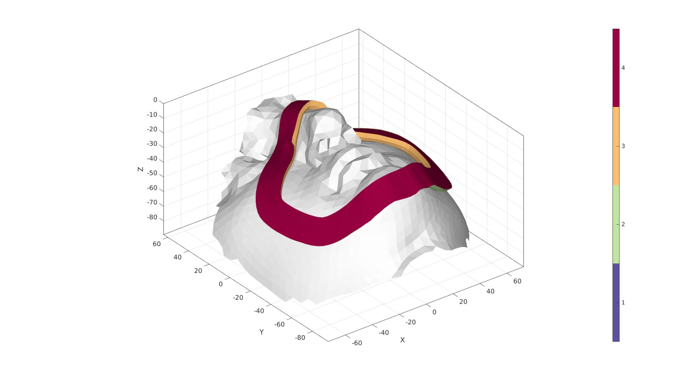
Defining the FEBio input structure
See also febioStructTemplate and febioStruct2xml and the FEBio user manual.
%Get a template with default settings [febio_spec]=febioStructTemplate; %febio_spec version febio_spec.ATTR.version='2.5'; %Module section febio_spec.Module.ATTR.type='solid'; %Control section febio_spec.Control.analysis.ATTR.type='static'; febio_spec.Control.time_steps=numTimeSteps; febio_spec.Control.step_size=1/numTimeSteps; febio_spec.Control.time_stepper.dtmin=dtmin; febio_spec.Control.time_stepper.dtmax=dtmax; febio_spec.Control.time_stepper.max_retries=max_retries; febio_spec.Control.time_stepper.opt_iter=opt_iter; febio_spec.Control.max_refs=max_refs; febio_spec.Control.max_ups=max_ups; febio_spec.Control.symmetric_stiffness=symmetric_stiffness; febio_spec.Control.min_residual=min_residual; %Material section febio_spec.Material.material{1}.ATTR.type='Ogden'; febio_spec.Material.material{1}.ATTR.id=1; febio_spec.Material.material{1}.c1=c1_1; febio_spec.Material.material{1}.m1=m1_1; febio_spec.Material.material{1}.c2=c1_1; febio_spec.Material.material{1}.m2=-m1_1; febio_spec.Material.material{1}.k=k_1; febio_spec.Material.material{2}.ATTR.type='Ogden'; febio_spec.Material.material{2}.ATTR.id=2; febio_spec.Material.material{2}.c1=c1_2; febio_spec.Material.material{2}.m1=m1_2; febio_spec.Material.material{2}.c2=c1_2; febio_spec.Material.material{2}.m2=-m1_2; febio_spec.Material.material{2}.k=k_2; %Geometry section % -> Nodes febio_spec.Geometry.Nodes{1}.ATTR.name='nodeSet_all'; %The node set name febio_spec.Geometry.Nodes{1}.node.ATTR.id=(1:size(V,1))'; %The node id's febio_spec.Geometry.Nodes{1}.node.VAL=V; %The nodel coordinates % -> Elements febio_spec.Geometry.Elements{1}.ATTR.type='penta6'; %Element type of this set febio_spec.Geometry.Elements{1}.ATTR.mat=1; %material index for this set febio_spec.Geometry.Elements{1}.ATTR.name='Face'; %Name of the element set febio_spec.Geometry.Elements{1}.elem.ATTR.id=(1:1:size(E_face,1))'; %Element id's febio_spec.Geometry.Elements{1}.elem.VAL=E_face; febio_spec.Geometry.Elements{2}.ATTR.type='tet4'; %Element type of this set febio_spec.Geometry.Elements{2}.ATTR.mat=2; %material index for this set febio_spec.Geometry.Elements{2}.ATTR.name='Tube'; %Name of the element set febio_spec.Geometry.Elements{2}.elem.ATTR.id=size(E_face,1)+(1:1:size(E_rim,1))'; %Element id's febio_spec.Geometry.Elements{2}.elem.VAL=E_rim; % -> NodeSets febio_spec.Geometry.NodeSet{1}.ATTR.name='bcSupportList'; febio_spec.Geometry.NodeSet{1}.node.ATTR.id=bcSupportList(:); febio_spec.Geometry.NodeSet{2}.ATTR.name='bcPrescribeList'; febio_spec.Geometry.NodeSet{2}.node.ATTR.id=bcPrescribeList(:); % -> Surfaces febio_spec.Geometry.Surface{1}.ATTR.name='contact_master'; febio_spec.Geometry.Surface{1}.tri3.ATTR.lid=(1:1:size(F_contact_master,1))'; febio_spec.Geometry.Surface{1}.tri3.VAL=F_contact_master; febio_spec.Geometry.Surface{2}.ATTR.name='contact_slave'; febio_spec.Geometry.Surface{2}.tri3.ATTR.lid=(1:1:size(F_contact_slave,1))'; febio_spec.Geometry.Surface{2}.tri3.VAL=F_contact_slave; % -> Surface pairs febio_spec.Geometry.SurfacePair{1}.ATTR.name='Contact1'; febio_spec.Geometry.SurfacePair{1}.master.ATTR.surface=febio_spec.Geometry.Surface{1}.ATTR.name; febio_spec.Geometry.SurfacePair{1}.slave.ATTR.surface=febio_spec.Geometry.Surface{2}.ATTR.name; %Boundary condition section % -> Fix boundary conditions febio_spec.Boundary.fix{1}.ATTR.bc='x'; febio_spec.Boundary.fix{1}.ATTR.node_set=febio_spec.Geometry.NodeSet{1}.ATTR.name; febio_spec.Boundary.fix{2}.ATTR.bc='y'; febio_spec.Boundary.fix{2}.ATTR.node_set=febio_spec.Geometry.NodeSet{1}.ATTR.name; febio_spec.Boundary.fix{3}.ATTR.bc='z'; febio_spec.Boundary.fix{3}.ATTR.node_set=febio_spec.Geometry.NodeSet{1}.ATTR.name; febio_spec.Boundary.fix{4}.ATTR.bc='x'; febio_spec.Boundary.fix{4}.ATTR.node_set=febio_spec.Geometry.NodeSet{2}.ATTR.name; febio_spec.Boundary.fix{5}.ATTR.bc='y'; febio_spec.Boundary.fix{5}.ATTR.node_set=febio_spec.Geometry.NodeSet{2}.ATTR.name; % -> Prescribed boundary conditions febio_spec.Boundary.prescribe{1}.ATTR.bc='z'; febio_spec.Boundary.prescribe{1}.ATTR.node_set=febio_spec.Geometry.NodeSet{2}.ATTR.name; febio_spec.Boundary.prescribe{1}.scale.ATTR.lc=1; febio_spec.Boundary.prescribe{1}.scale.VAL=1; febio_spec.Boundary.prescribe{1}.relative=1; febio_spec.Boundary.prescribe{1}.value=displacementMagnitude_z; %Contact section febio_spec.Contact.contact{1}.ATTR.surface_pair=febio_spec.Geometry.SurfacePair{1}.ATTR.name; febio_spec.Contact.contact{1}.ATTR.type='sliding-elastic'; febio_spec.Contact.contact{1}.two_pass=1; febio_spec.Contact.contact{1}.laugon=laugon; febio_spec.Contact.contact{1}.tolerance=0.2; febio_spec.Contact.contact{1}.gaptol=0; febio_spec.Contact.contact{1}.minaug=minaug; febio_spec.Contact.contact{1}.maxaug=maxaug; febio_spec.Contact.contact{1}.search_tol=0.01; febio_spec.Contact.contact{1}.search_radius=0.1; febio_spec.Contact.contact{1}.symmetric_stiffness=0; febio_spec.Contact.contact{1}.auto_penalty=1; febio_spec.Contact.contact{1}.penalty=contactPenalty; febio_spec.Contact.contact{1}.fric_coeff=fric_coeff; %Output section % -> log file febio_spec.Output.logfile.ATTR.file=febioLogFileName; febio_spec.Output.logfile.node_data{1}.ATTR.file=febioLogFileName_disp; febio_spec.Output.logfile.node_data{1}.ATTR.data='ux;uy;uz'; febio_spec.Output.logfile.node_data{1}.ATTR.delim=','; febio_spec.Output.logfile.node_data{1}.VAL=1:size(V,1); febio_spec.Output.logfile.node_data{2}.ATTR.file=febioLogFileName_force; febio_spec.Output.logfile.node_data{2}.ATTR.data='Rx;Ry;Rz'; febio_spec.Output.logfile.node_data{2}.ATTR.delim=','; febio_spec.Output.logfile.node_data{2}.VAL=1:size(V,1); febio_spec.Output.logfile.element_data{1}.ATTR.file=febioLogFileName_strainEnergy; febio_spec.Output.logfile.element_data{1}.ATTR.data='sed'; febio_spec.Output.logfile.element_data{1}.ATTR.delim=','; febio_spec.Output.logfile.element_data{1}.VAL=1:size(E_face,1);
Quick viewing of the FEBio input file structure
The febView function can be used to view the xml structure in a MATLAB figure window.
febView(febio_spec); %Viewing the febio file
Exporting the FEBio input file
Exporting the febio_spec structure to an FEBio input file is done using the febioStruct2xml function.
febioStruct2xml(febio_spec,febioFebFileName); %Exporting to file and domNode
Running the FEBio analysis
To run the analysis defined by the created FEBio input file the runMonitorFEBio function is used. The input for this function is a structure defining job settings e.g. the FEBio input file name. The optional output runFlag informs the user if the analysis was run succesfully.
febioAnalysis.run_filename=febioFebFileName; %The input file name febioAnalysis.run_logname=febioLogFileName; %The name for the log file febioAnalysis.disp_on=1; %Display information on the command window febioAnalysis.disp_log_on=1; %Display convergence information in the command window febioAnalysis.runMode=runMode;%'internal'; febioAnalysis.t_check=0.25; %Time for checking log file (dont set too small) febioAnalysis.maxtpi=1e99; %Max analysis time febioAnalysis.maxLogCheckTime=10; %Max log file checking time [runFlag]=runMonitorFEBio(febioAnalysis);%START FEBio NOW!!!!!!!!
%%%%%%%%%%%%%%%%%%%%%%%%%%%%%%%%%%%%%%%%%%%%% --- STARTING FEBIO JOB --- 02-Jul-2020 21:04:31 Waiting for log file... Proceeding to check log file...02-Jul-2020 21:04:31 ------- converged at time : 0.0666667 ------- converged at time : 0.10691 ------- converged at time : 0.159105 ------- converged at time : 0.22086 ------- converged at time : 0.290265 ------- converged at time : 0.365789 ------- converged at time : 0.446208 ------- converged at time : 0.530543 ------- converged at time : 0.618011 ------- converged at time : 0.707985 ------- converged at time : 0.799965 ------- converged at time : 0.893549 ------- converged at time : 0.988416 ------- converged at time : 1 --- Done --- 02-Jul-2020 21:06:04
Import FEBio results
if runFlag==1 %i.e. a succesful run
% Importing nodal displacements from a log file [time_mat, N_disp_mat,~]=importFEBio_logfile(fullfile(savePath,febioLogFileName_disp)); %Nodal displacements time_mat=[0; time_mat(:)]; %Time N_disp_mat=N_disp_mat(:,2:end,:); sizImport=size(N_disp_mat); sizImport(3)=sizImport(3)+1; N_disp_mat_n=zeros(sizImport); N_disp_mat_n(:,:,2:end)=N_disp_mat; N_disp_mat=N_disp_mat_n; DN=N_disp_mat(:,:,end); V_def=V+DN; V_DEF=N_disp_mat+repmat(V,[1 1 size(N_disp_mat,3)]); X_DEF=V_DEF(:,1,:); Y_DEF=V_DEF(:,2,:); Z_DEF=V_DEF(:,3,:); C=sqrt(sum(DN(:,3).^2,2));
Importing element strain energies from a log file
[~,E_energy,~]=importFEBio_logfile(fullfile(savePath,febioLogFileName_strainEnergy)); %Element strain energy %Remove nodal index column E_energy=E_energy(:,2:end,:); %Add initial state i.e. zero energy sizImport=size(E_energy); sizImport(3)=sizImport(3)+1; E_energy_mat_n=zeros(sizImport); E_energy_mat_n(:,:,2:end)=E_energy; E_energy=E_energy_mat_n; [FE_face,C_energy_face]=element2patch(E_face,E_energy(1:size(E_face,1),:,end),'penta6'); [CV]=faceToVertexMeasure(FE_face,V,C_energy_face);
Plotting the simulated results using anim8 to visualize and animate deformations
% Create basic view and store graphics handle to initiate animation hf=cFigure; %Open figure gtitle([febioFebFileNamePart,': Press play to animate']); hp1=gpatch(FE_face{1},V_def,CV,'k',1); %Add graphics object to animate hp1.FaceColor='Interp'; hp2=gpatch(Fb_rim,V_def,'k','none',0.3); %Add graphics object to animate hp3=gpatch(F_mask,V_mask,'kw','none',0.3); axisGeom(gca,fontSize); colormap(gjet(250)); colorbar; caxis([0 max(C_energy_face{1})/5]); axis([min(X_DEF(:)) max(X_DEF(:)) min(Y_DEF(:)) max(Y_DEF(:)) min(Z_DEF(:)) max(Z_DEF(:))]); camlight headlight; lighting gouraud; % Set up animation features animStruct.Time=time_mat; %The time vector for qt=1:1:size(N_disp_mat,3) %Loop over time increments DN=N_disp_mat(:,:,qt); %Current displacement V_def=V+DN; %Current nodal coordinates % C=sqrt(sum(DN(:,3).^2,2)); %New color [FE_face,C_energy_face]=element2patch(E_face,E_energy(1:size(E_face,1),:,qt),'penta6'); [CV]=faceToVertexMeasure(FE_face,V,C_energy_face); u=mean(DN(bcPrescribeList,:),1); V_mask_def=V_mask+u(ones(size(V_mask,1),1),:); %Set entries in animation structure animStruct.Handles{qt}=[hp1 hp1 hp2 hp3]; %Handles of objects to animate animStruct.Props{qt}={'Vertices','CData','Vertices','Vertices'}; %Properties of objects to animate animStruct.Set{qt}={V_def,CV,V_def,V_mask_def}; %Property values for to set in order to animate end anim8(hf,animStruct); %Initiate animation feature drawnow;

end
function[P]=traceToSurf(V1,N1,F2,V2,optStructRayTrace) numPoints=size(V1,1); P=nan(numPoints,3); c=1; % hw=waitbar(c/numPoints,['Ray tracing...',num2str(round(100.*c/numPoints)),'%']); for q=1:1:numPoints v1=V1(q,:); n1=N1(q,:); [V_intersect,L_intersect,~] = triangleRayIntersection(v1(ones(size(F2,1),1),:),n1(ones(size(F2,1),1),:),V2,F2,optStructRayTrace); V_intersect=V_intersect(L_intersect,:); if nnz(L_intersect)>0 d=min(distND(V_intersect,v1),[],2); [~,indMin]=min(d); P(q,:)=V_intersect(indMin,:); end % waitbar(c/numPoints,hw,['Ray tracing...',num2str(round(100.*c/numPoints)),'%']); c=c+1; end % close(hw); end function [Fr,Vr]=roundMesh(E,Vm2,Nm2,nc,stripRadius) indCurve=edgeListToCurve(E); indCurve=indCurve(1:end-1); E=[indCurve(1:end)' [indCurve(2:end) indCurve(1)]']; Ne=vecnormalize(edgeVec(E,Vm2)); Nf=-Nm2(E(:,1),:); Ne2=vecnormalize(cross(Nf,Ne)); X=repmat(Vm2(E(:,1),1),1,nc); Y=repmat(Vm2(E(:,1),2),1,nc); Z=repmat(Vm2(E(:,1),3),1,nc); t=repmat(linspace(0,pi/2,nc),size(Z,1),1); X=X+stripRadius.*sin(t).*repmat(Ne2(:,1),1,nc)-stripRadius.*cos(t).*repmat(Nf(:,1),1,nc)+stripRadius.*repmat(Nf(:,1),1,nc); Y=Y+stripRadius.*sin(t).*repmat(Ne2(:,2),1,nc)-stripRadius.*cos(t).*repmat(Nf(:,2),1,nc)+stripRadius.*repmat(Nf(:,2),1,nc); Z=Z+stripRadius.*sin(t).*repmat(Ne2(:,3),1,nc)-stripRadius.*cos(t).*repmat(Nf(:,3),1,nc)+stripRadius.*repmat(Nf(:,3),1,nc); [Fr,Vr]=grid2patch(X,Y,Z,[],[1 0 0]); end

GIBBON www.gibboncode.org
Kevin Mattheus Moerman, gibbon.toolbox@gmail.com
GIBBON footer text
License: https://github.com/gibbonCode/GIBBON/blob/master/LICENSE
GIBBON: The Geometry and Image-based Bioengineering add-On. A toolbox for image segmentation, image-based modeling, meshing, and finite element analysis.
Copyright (C) 2019 Kevin Mattheus Moerman
This program is free software: you can redistribute it and/or modify it under the terms of the GNU General Public License as published by the Free Software Foundation, either version 3 of the License, or (at your option) any later version.
This program is distributed in the hope that it will be useful, but WITHOUT ANY WARRANTY; without even the implied warranty of MERCHANTABILITY or FITNESS FOR A PARTICULAR PURPOSE. See the GNU General Public License for more details.
You should have received a copy of the GNU General Public License along with this program. If not, see http://www.gnu.org/licenses/.
GIBBON footer text
License: https://github.com/gibbonCode/GIBBON/blob/master/LICENSE
GIBBON: The Geometry and Image-based Bioengineering add-On. A toolbox for image segmentation, image-based modeling, meshing, and finite element analysis.
Copyright (C) 2006-2020 Kevin Mattheus Moerman
This program is free software: you can redistribute it and/or modify it under the terms of the GNU General Public License as published by the Free Software Foundation, either version 3 of the License, or (at your option) any later version.
This program is distributed in the hope that it will be useful, but WITHOUT ANY WARRANTY; without even the implied warranty of MERCHANTABILITY or FITNESS FOR A PARTICULAR PURPOSE. See the GNU General Public License for more details.
You should have received a copy of the GNU General Public License along with this program. If not, see http://www.gnu.org/licenses/.